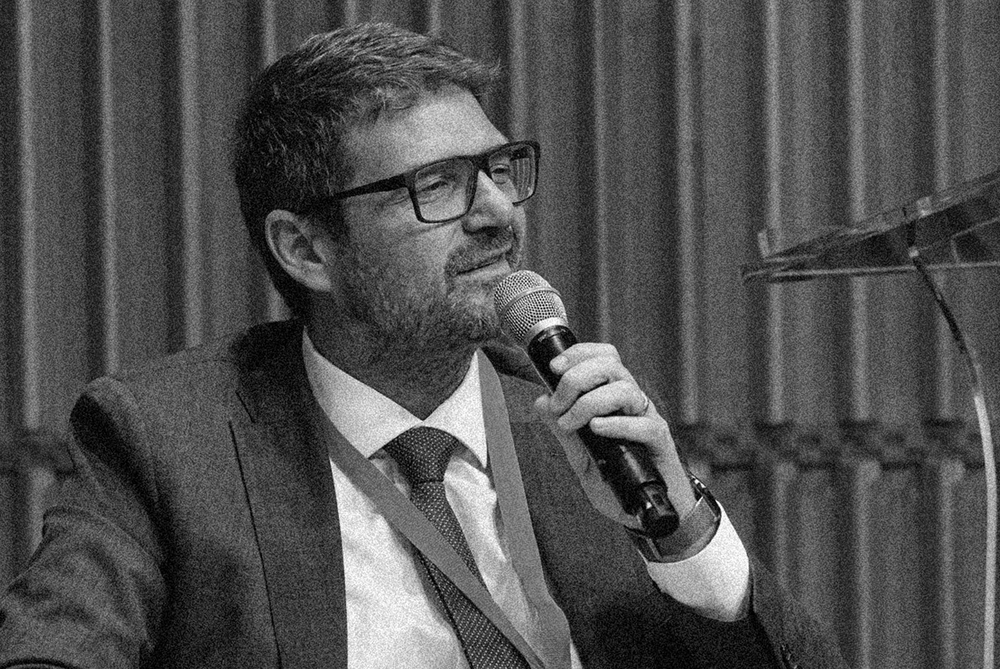

AI, strategic foresight, innovazione pubblica e sviluppo delle competenze.

La curiosità e l'apprendimento continuo orientano da sempre il mio percorso personale e professionale: alimentano il mio desiderio di comprendere come le trasformazioni culturali, sociali, economiche e tecnologiche influenzino la vita delle persone, le organizzazioni e le istituzioni.
Da molti anni studio il rapporto tra innovazione, intelligenza artificiale, pubblica amministrazione, formazione e sviluppo delle competenze. Lo faccio attraverso i diversi ruoli che ricopro, convinto che comprendere il cambiamento sia il primo passo per affrontarlo e governarlo in modo responsabile.
Per questo mi occupo di ricerca, formazione e divulgazione, progettando strumenti e iniziative che aiutano decisori pubblici, manager, professionisti e studenti a interpretare le trasformazioni in corso, sviluppare nuove competenze e tradurre l'innovazione in valore concreto.
Come Direttore Generale presso il Ministero dell'Economia e delle Finanze, mi confronto con le sfide che l'innovazione pone alle istituzioni pubbliche. Come docente presso l'Università degli Studi Guglielmo Marconi, accompagno studenti e professionisti nello sviluppo delle conoscenze necessarie per leggere e comprendere un contesto in continua evoluzione.
Credo che la tecnologia rappresenti una straordinaria opportunità, ma che il suo valore non risieda negli strumenti in sé. L'intelligenza artificiale, i dati e le piattaforme digitali diventano realmente significativi quando aiutano le persone a comprendere meglio la realtà, rafforzando la capacità di giudizio e rendendo possibili decisioni più consapevoli ed efficaci.
Per questo considero l'innovazione soprattutto una sfida umana. Le tecnologie possono ampliare le nostre possibilità, ma sono sempre le persone a determinarne il significato, la direzione e l'impatto.